Advancing Education in Machine Learning & AI
A dedicated academic department focusing on Machine Learning, Artificial Intelligence, Data Science, and intelligent systems through curriculum-driven and practical learning.
About the Department
The Department of Machine Learning focuses on building strong foundations in Artificial Intelligence, Data Science, and intelligent systems through academic excellence and practical exposure.
The B.Sc. Computer Science and Machine Learning (CSML) program
at Loyola Academy integrates the fundamental principles of Computer Science
with advanced Machine Learning concepts. The curriculum is designed to equip
students with a strong foundation in algorithms, data structures, artificial
intelligence, programming, databases, and software engineering.
The program enables students to understand how machines learn from data and
apply intelligent techniques to solve real-world problems. Graduates are
prepared for careers in data science, software development, artificial
intelligence, and related technological domains.
Emphasis is placed on experiential learning through workshops, industrial
visits, guest lectures, seminars, internships, and hands-on project work.
These opportunities help students develop analytical skills, teamwork,
communication abilities, and professional confidence.
Vision
To shape future-ready professionals by advancing excellence in Machine Learning, Artificial Intelligence, and data-driven innovation.
Mission
- Deliver industry-aligned education in Machine Learning and AI.
- Encourage innovation, research, and ethical practices.
- Bridge academic learning with real-world applications.
- Develop socially responsible and skilled professionals.
Outreach Programs
Our department extends learning beyond classrooms through impactful outreach initiatives that empower society and nurture future talent.

Coca-Cola Factory Visit
The visit to the Coca-Cola factory was insightful and memorable, offering a complete guided tour of the facility. The production process is highly advanced, relying on modern automated machinery to ensure efficiency, quality, and hygiene. Manufacturing is organized into different stages, from raw material handling to bottling, labeling, and packaging. Quality checks are conducted at multiple levels to meet Coca-Cola’s global standards. The coordination between skilled staff and technology highlighted effective teamwork. The warm welcome and refreshments added to an overall informative and enjoyable experience.
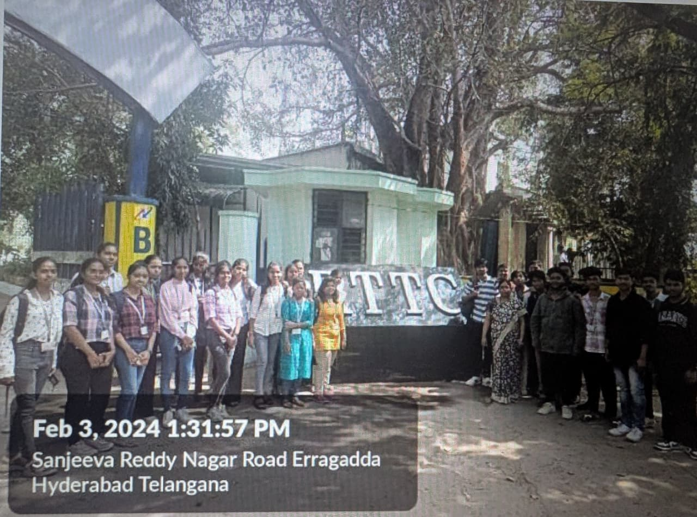
BSNL Industrial Visit
The visit to BSNL provided students with practical exposure to telecommunication infrastructure and its role in strengthening the nation’s telecom network. The first session on telecommunication networking explained transmission media, data transmission techniques, and landline communication using copper and fiber optics. The second session focused on battery and power connections, covering current supply, battery functions, and power systems used in telecom operations. The networking lab sessions demonstrated router usage, network access, and different types of routers for business and personal use. Overall, the program at RTTC Hyderabad helped bridge the gap between academic knowledge and real-world telecom applications while supporting skill development.
T-Hub Industrial Visit
The Department organized an Industrial Visit to T-Hub, Hyderabad, to expose students to innovation, entrepreneurship, and industry-oriented learning. The visit began with a warm welcome, followed by an interactive session by Mr. Srinivas Rao Mahankali, Vice President of T-Hub, who shared insights into T-Hub’s vision, growth, and startup ecosystem. Students from four colleges actively participated, presenting startup ideas and engaging in discussions. After lunch, a guided tour of the facility allowed students to explore the working environment and interact with professionals. Overall, the visit provided valuable real-world exposure and enhanced students understanding of entrepreneurship and collaboration.
Programs Offered
B.Sc Computer Science and Machine Learning
Duration: 3 Years
Focus: AI, Data Science, Deep Learning
Curriculum Highlights
- Industry-aligned Machine Learning curriculum
- Strong foundation in Python, Mathematics, and Statistics
- Core concepts of Supervised and Unsupervised Learning
- Hands-on training through dedicated ML laboratories
- Exposure to Data Science and Data Visualization
- Introduction to Artificial Intelligence and Deep Learning
- Real-world projects and case-based learning
- Guest lectures, workshops, and industrial visits
- Internship and certification guidance
- Focus on innovation, research, and employability
Laboratories & Infrastructure
✔ Machine Learning Lab
✔ Artificial Intelligence Lab
✔ Data Science Lab
Faculty

Mr. A. Venugopal
Asst. Prof. in Comp. Sci & HoD

Dr. C. Shanthi
Asst. Prof. Electronics

Dr. B. Rajini
Asst. Prof. in Comp. Sci

Mr. N. Naveen
Asst. Prof. in Comp. Sci

Mrs. B. Kavya
Asst. Prof. in Comp. Sci
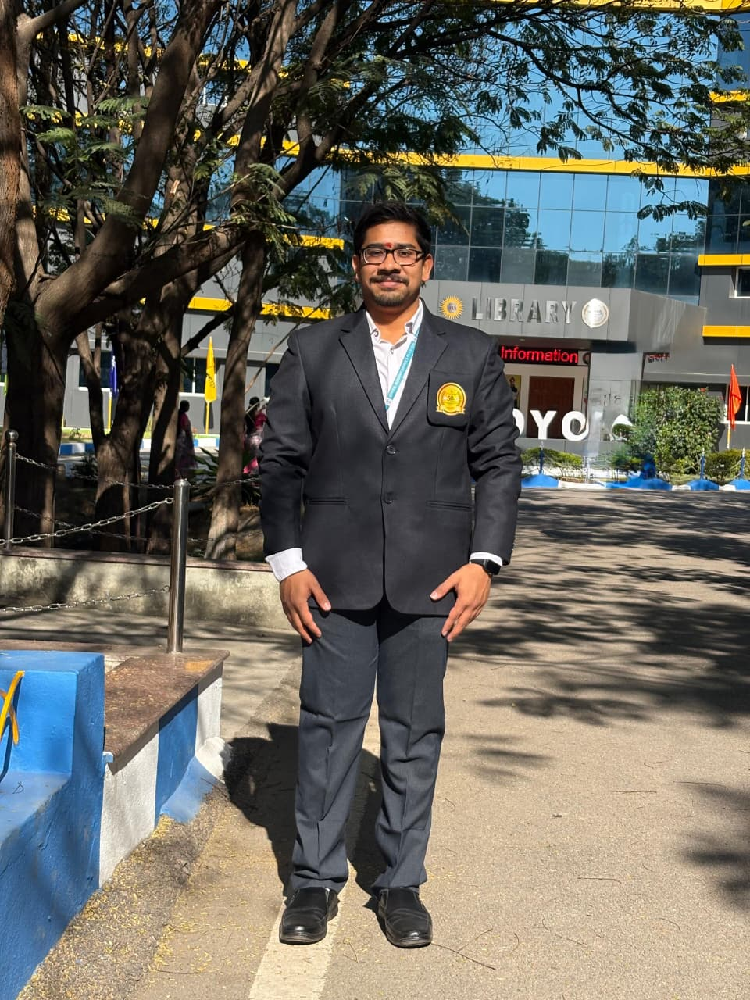
Mr. P. Venkata Jaya Krishna Ramana Teja
Asst. Prof. in Comp. Sci
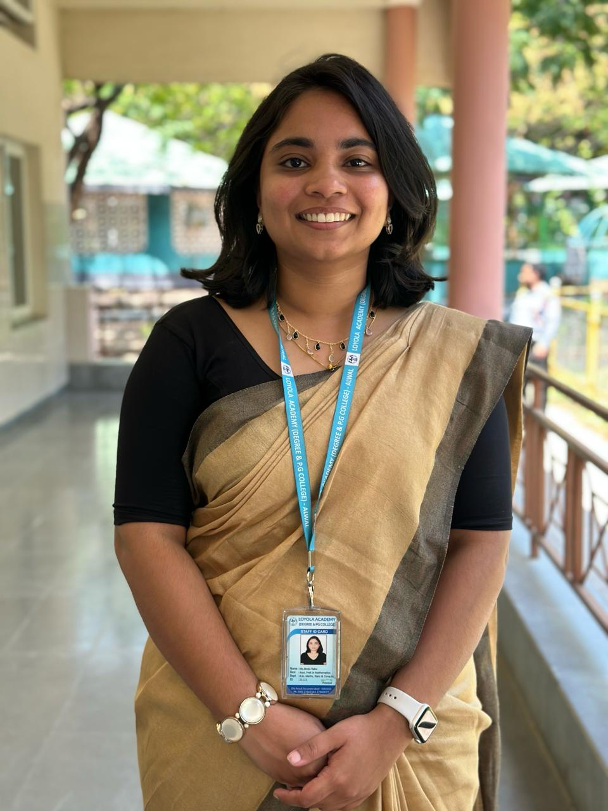
Mrs. Bindu Babu
Asst. Prof. in Mathematics
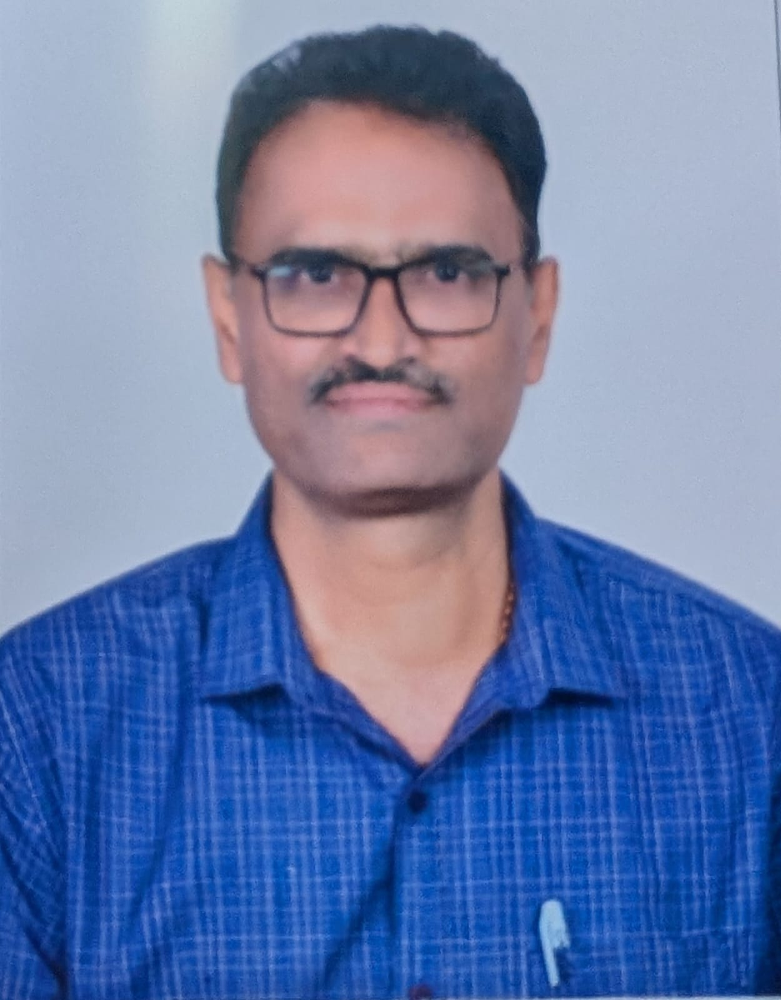
Mr. K. Kiran Kumar
Asst. Prof. in Mathematics
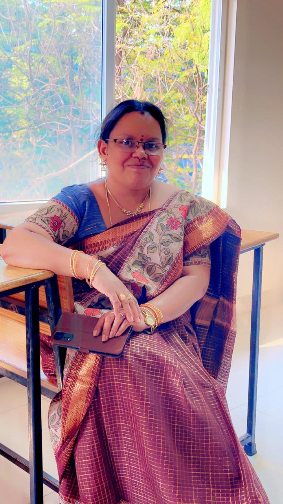
Mrs. D. Sravani
Asst. Prof. in Statistics
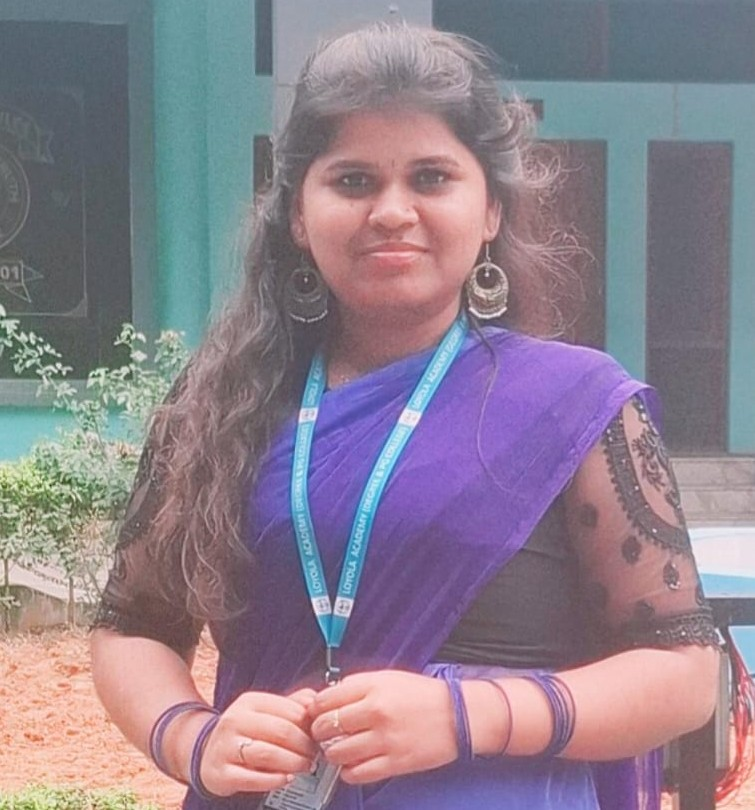
Ms. Sirisha
Asst. Prof. in Mathematics
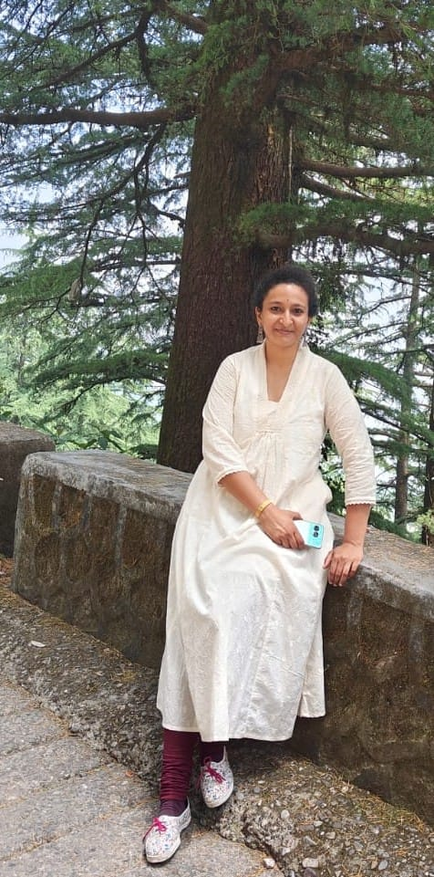
Dr. S. Pritivika
Asst. Prof. in English
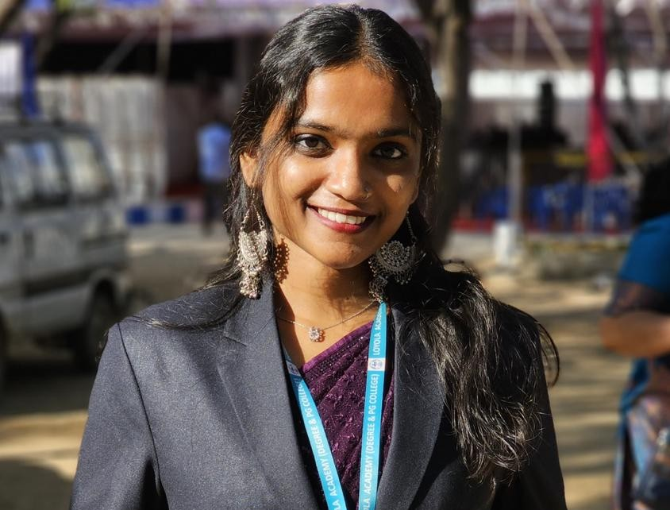
Ms. B. Hepzibah Spoorthi
Asst. Prof. in English
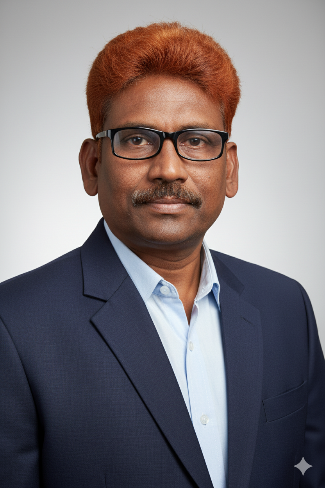
Dr. K. Musalaiah
Asst. Prof. in IHC
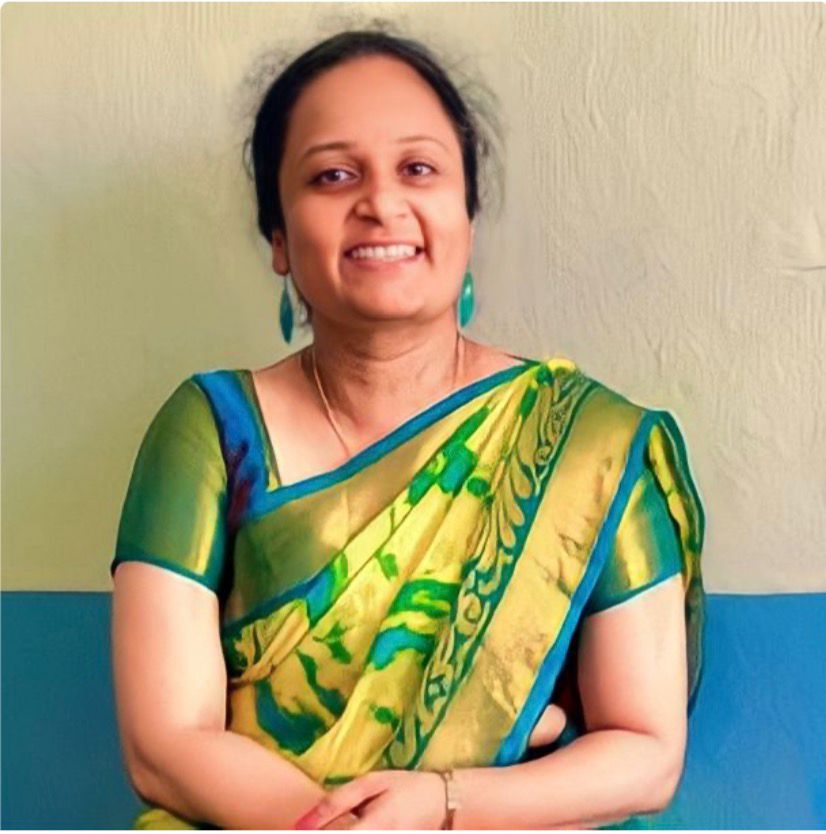
Ms. O. Nikhila
Asst. Prof. in Environmental Science
Student Resources
Events
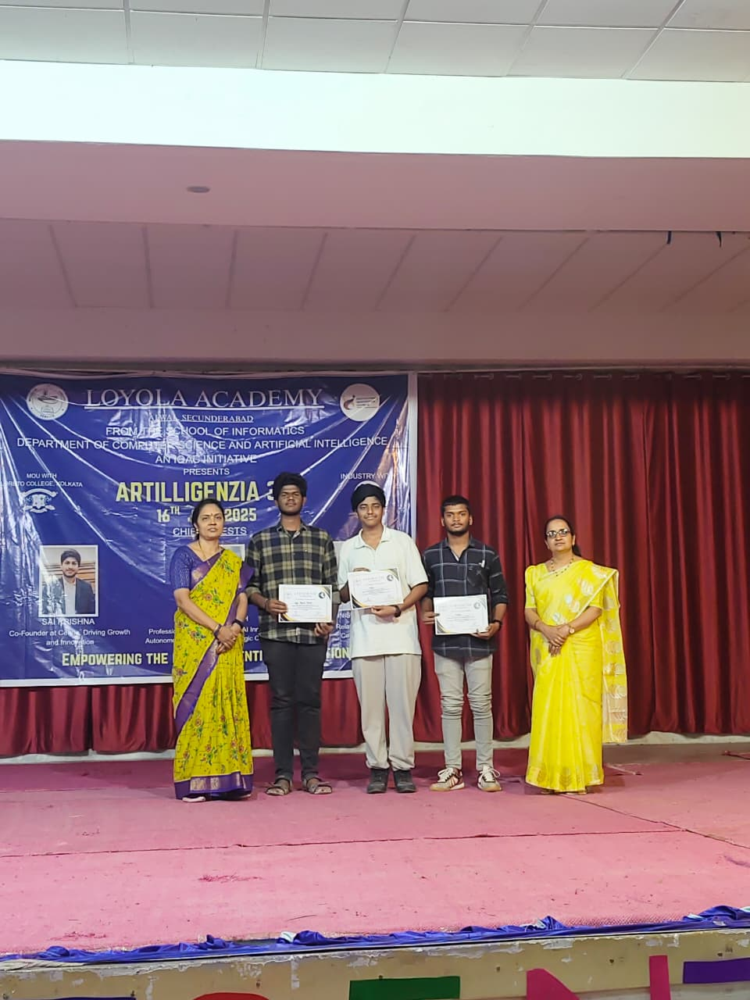
1st Prize – Intellexa Hackathon
The Department of AI organized the Intellexa Hackathon in which Prasad, Manohar, and Nitish Reddy secured the 1st prize.
2025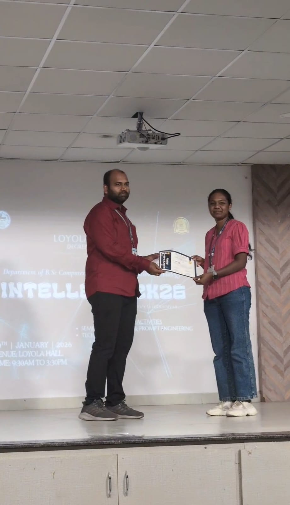
1st Prize – Seek And Find
The Department of CS organized the Seek And Find event in which G.A. Sneha secured the 1st prize.
2025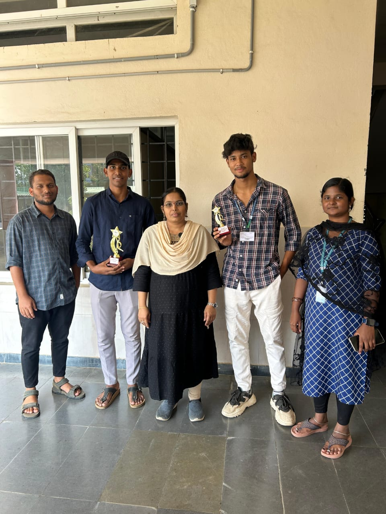
Vastrakala Event
2025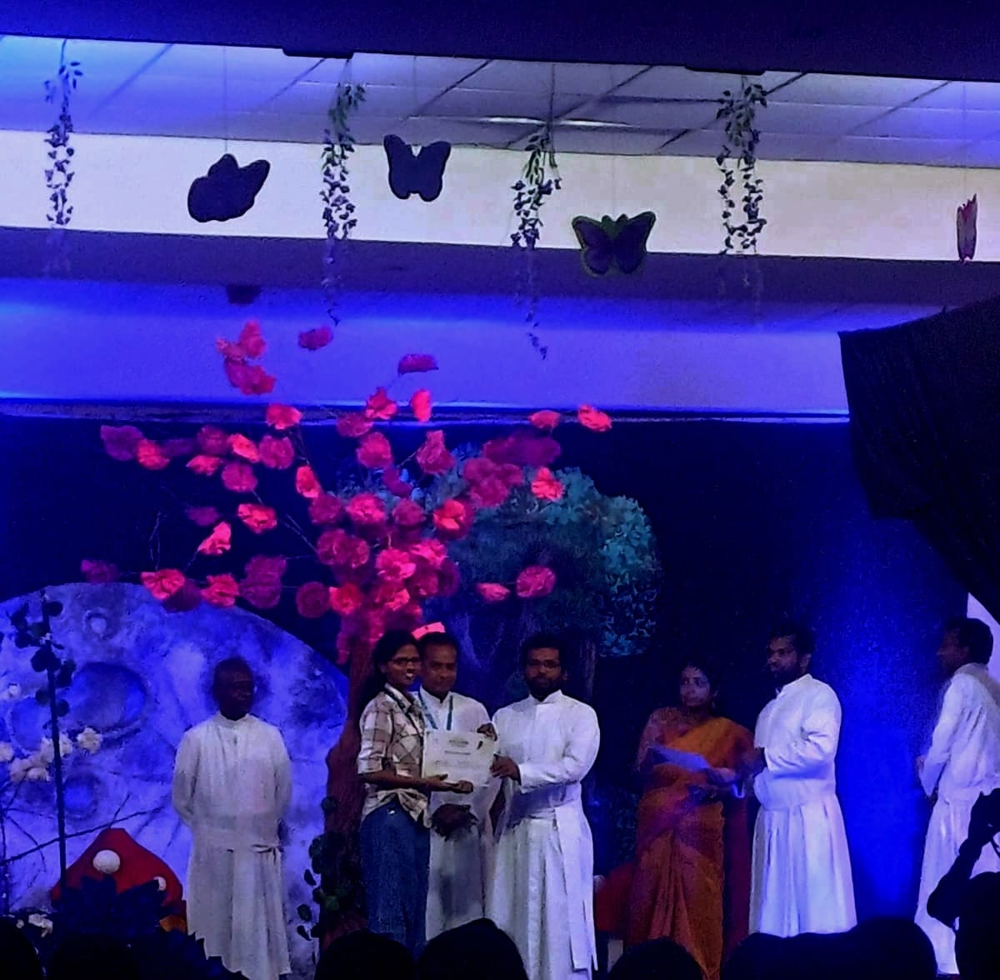
2nd Prize – Painting Competition
The Department of English organized the Painting Competition in which Hima Bindhu secured the 2nd prize.
2025